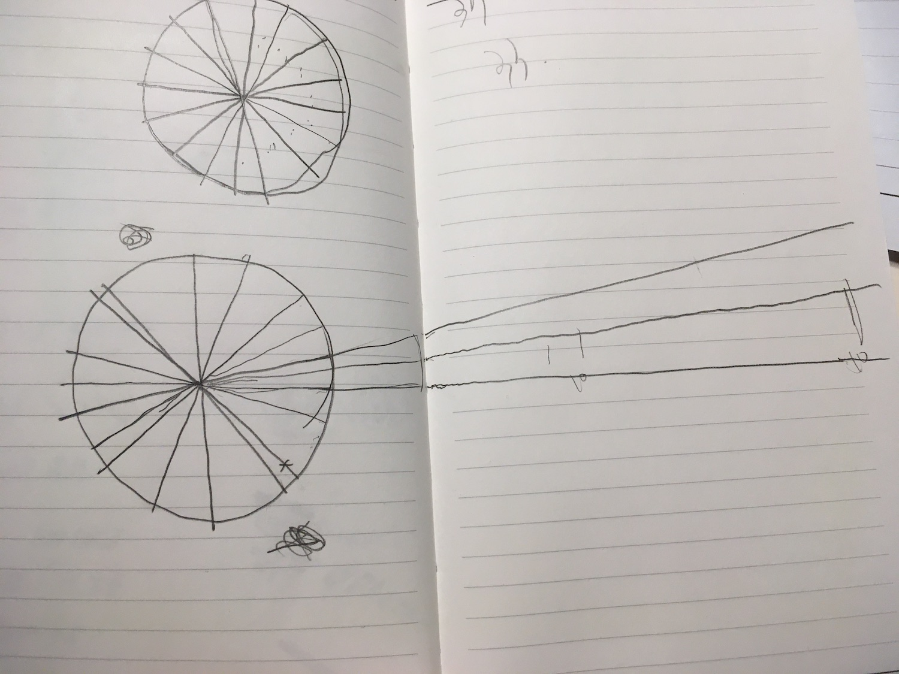

실도 새로 사고, 바늘도 새로 사고, 새로운 뜨개법에 도전하다.
왜냐하면, 원래 샀던 실이 왠지 유광이라 마음에 들지 않았고.. 보통의 코바늘 기법으로 장구 지름 만큼의 원을 만드는 게 갑자기 너무 막막하게 느껴졌기 때문이다. 물론 그 실을 이미 8개인가 사긴 했지만..
새로운 뜨개법은 아프간(아후강) 코바늘이라는, 보통의 코바늘과 다르게 훨씬 긴 코바늘을 이용하는 것이다. 코를 한 개로 유지하면서 코바늘을 뜨는 게 아니라, 대바늘처럼 한 단에 코를 쭉 만들었다가 단을 마무리하는 방식으로 이해하고 있다. 터니시안 뜨개라고도 하는 것 같다.
우연히 유튜브에서 본 뜨개 계정에서 보통의 코바늘과 다른 방식으로 하는 걸 보고 그냥 저런 게 있구나 했는데, 몇 번 보다 보니 이게 왠지 보통의 코바늘보다 속도가 좀 빨라 보이는 아마 기분 탓이겠지만 하여간 왠지 빠르게 원하는 모양을 달성할 수 있을 것만 같다는 생각이 들어서 장구 가방에 시도해보기로 했다.
여러 가지 옵션의 아후강 바늘이 있지만 원래는 아크릴 소재의 바늘을 사고 싶었는데 원하는 바늘 두께가 없어서 고민하다가.. 나무 소재는 또 실이 걸린다고도 하고, 그래서 회색의 무난 바늘을 샀다. 브랜드는 니트프로라는 곳인 듯. 실제로 받아 보니 진짜 길고, 알루미늄 소재라서 책상에 둘 때 챙그랑 소리가 난다. 그래서 약간 젓가락 같기도 하다..
실을 새로 사고 싶었던 건 그냥 괜한 불만스런 기분 때문이었다. 한 번 떠보니 영 촉감이 별로고 광택이 있고 또 실이 너무 잘 갈라지기도 해서 그냥 뜨개용품 스마트스토어를 보다가, 식물성 소재인데 물과 습기에 강하다는 실이 있어서 좀 비싼데 일단 1개 사보았다. 색도 좀 고민했는데 이미 유난인데 더 유난떨고 싶지 않아서 그냥 검정색으로 골랐다.
위에 유튜브 원형 편물을 응용해서 큰 원을 만들 생각이었는데, 내가 원하는 지름에 맞춰서 하려면 어떻게 해야 하나 순간 막막했다.
유튜브 영상에서는 매직링 -> 6 짧뜨 -> 12 짧뜨 까지 뜨고 12개 코 길이만큼 원으로 채우는 방법인데, 지름이 길어지니까 채워야 하는 원의 둘레가 길어지고, 그걸 계산해서 채우는 뜨개 방식도 좀 달라지는.. 그런..설명하기 어려운 하여간 그런 풀어야 하는 문제가 있었다.
그래서 나의 해답은.. 일단 가운데 중심이 되는 짧뜨로 이루어진 원을 조금더 크게 만들었다. 12 짧뜨 -> 18 짧뜨 -> 24짧뜨 까지 코늘림을 하니 내 엄지 길이의 반 정도가 되어서 반지름에 맞추기 위해 사슬을 내 손뼘 길이 만큼 빼줬다. 그러면 이제 24짧뜨에 2번씩 48개를 반복해서(=48개의 부채꼴) 원을 채워야 하기 때문에.. 360도를 24로 나누면 15도.. 대충 그렇게 그림을 그려 놓고 실제 길이에 얼추 맞게 코를 계획해봤다. 유튜브 영상에서는 한길긴뜨기를 둘레쪽에 뒀는데, 아무래도 한길긴뜨기로는 둘레를 채우기 모자랄 것 같아서 두길긴뜨기를 가장 바깥쪽에 두고, 한길긴뜨기,사슬뜨기,그냥 고리, 이렇게 부채꼴을 채우는 방식으로 계획했다.
이 원 그림을 그리고 있자니, 넷플릭스에 좀 좋아하는 무한에 관한 다큐가 있는데 무한 개념을 설명하기 위한 예시로 원이 나오는 게 떠올랐다.. 원을 이루는 점의 개수는 무한하다.. 크기가 다른 두 개의 원의 중심점을 일치시켜 놓고, 중심점을 기준으로 원 둘레 쪽으로 직선을 그으면 두 원 위의 점은 일대일 대응한다.. 둘레의 길이는 다른데 원 위의 점은 일대일 대응한다.. 무한 집합의 재밌는 점 뭐 그런 설명이었다..
진짜 이 내용이 생각이 나서 아 그럼 대충 원본이랑 비슷한 방식으로 하면 되지 않나? 순간 그런 생각이 들었다가 아 아니지.. 현실은 아니지.. 그래서 제대로 크기에 맞춰서 계획을 세우기 시작했다. 실제로 떠보니 얼추 계획은 맞는 것 같다. 근데 어쩔 수 없이 구멍이 좀 숭숭 나게 떠져서.. 장구 가방의 역할을 할 수 있을까 근본적인 의문이 들기 시작했다. 일단 완성은 해봐야겠다.